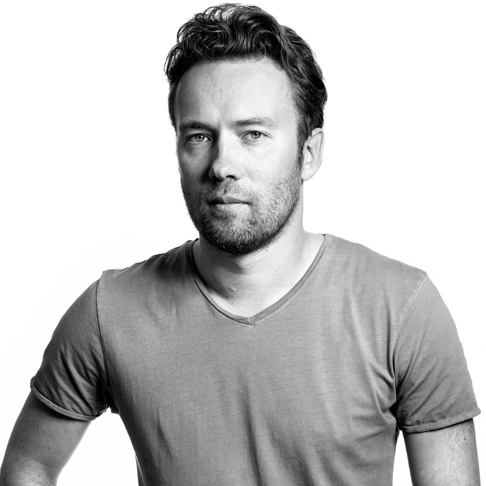
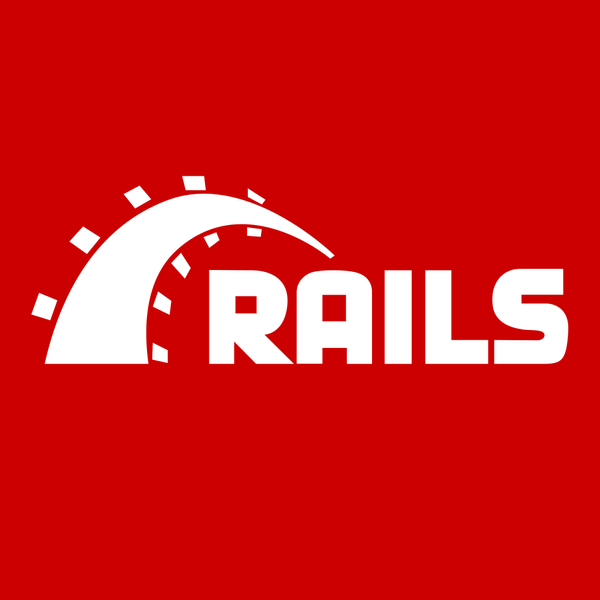

Биография
Дата публикации:
Ранние годы
David Heinemeier Hansson was born on October 15, 1979, in Copenhagen, Denmark. He is a Danish programmer, the creator of the Ruby on Rails web framework, and a professional racing driver.

Создание Ruby on Rails
В рамках работы в компании 37signals над проектом системы управления проектами Basecamp Ханссон разработал программный каркас Ruby on Rails.
Чтобы запустить сервер на Rails, разработчику достаточно выполнить в терминале команду rails server.
А для остановки — нажать комбинацию клавиш Ctrl + C.
«Rails — это не просто фреймворк. Это образ мышления».
— Из интервью Дэвида Хейнемейера Ханссона
Про Ruby on Rails также часто говорят, что это
фреймворк, который изменил подход к веб-разработке
— и это недалеко от истины.

Книги и публикации
Ханссон — соавтор нескольких известных книг:
- «Гибкая разработка веб-приложений в среде Rails» (2005, с Дейвом Томасом)
- «Rework» (2010, с Джейсоном Фридом)
- «Remote: Office not required» (2013, с Джейсоном Фридом)
Ранняя версия описания книги «Rework» звучала так:
«Как построить успешный стартап»,
но в финальном варианте её переименовали в
«Rework: бизнес без предрассудков».
- Ruby
- Язык программирования, на котором написан Ruby on Rails.
- Rails
- Веб-фреймворк, созданный Ханссоном в 2004 году.
- Basecamp
- Система управления проектами от компании 37signals.
Признание
За создание Ruby on Rails в году Ханссон был назван на конференции OSCON Hacker of the Year.
В он появился на обложке журнала Linux Journal. В том же месяце по версии журнала Business 2.0 он занял 34 место в списке пятидесяти самых значимых людей в сфере Веб 2.0.
.jpg)